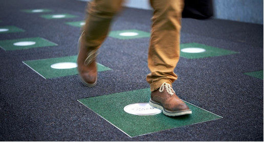
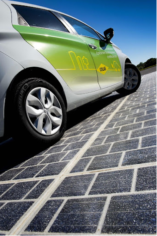
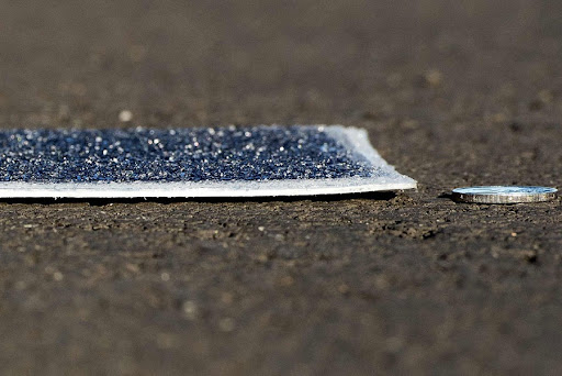
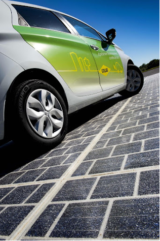
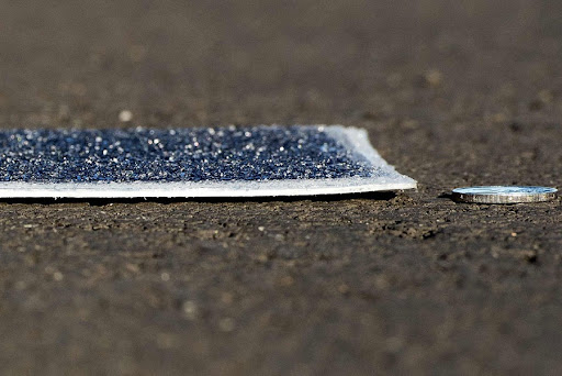

Les dalles piezoélectriques
Selon notre sondage,

 L’ensemble lui offre une résistance aux millions de passages de roues sur banc de test de tous types de véhicules, y compris de poids lourds (13 tonnes à l’essieu). Le dispositif électronique se trouve dans une sous-couche de la dalle et permet d’envoyer l’énergie créée directement sur le réseau. « Vingt mètres carrés du dispositif suffisent à alimenter un foyer en électricité, et un kilomètre une ville de cinq mille habitants », précise le directeur de l’innovation. Pas d’inquiétude concernant le revêtement en verre : celui-ci garde les mêmes caractéristiques (dont l’adhérence) que celles des routes actuelles. Ces dalles sont actuellement en phase pilote sur trois sites, dont celui de l’INES.
 Quelque 750.000 personnes fréquentent chaque jour la ligne 1 du métro parisien. Imaginez que ces millions de pas puissent être convertis en énergie ; c'est l'ambition de Pavegen, une startup britannique créée en 2009. Cette dernière a mis au point des pavés spéciaux équipés de capteurs électromagnétiques qui transforment la pression mécanique de la marche en énergie. À chaque pas, la tuile s'enfonce légèrement, ce qui entraîne une rotation du générateur électromagnétique et produit ainsi 2 à 4 joules, soit 4 à 7 watts d'électricité en fonction du poids de la personne. De quoi alimenter une ampoule pendant une seconde ou une conversation de six secondes sur un iPhone. Le chiffre paraît dérisoire, mais si vous le multipliez par des milliers de personnes passant chaque jour sur la surface, il est possible d'alimenter en électricité des lampadaires, des panneaux d'affichage, ou des bornes de recharges USB. Les pavés mesurent 9 centimètres d'épaisseur et 43 centimètres de longueur et sont fabriqués à partir de matériaux recyclés comme des pneus de camion. « Initialement, nos pavés étaient rectangulaires avec un générateur au milieu, ce qui permettait de récupérer seulement 20 % de l'énergie des pas. Nous avons finalement opté pour une forme triangulaire avec un générateur à chaque coin du triangle », détaille Laurence Kemball-Cook, la P.-D. G de Pavegen, qui indique que ce nouveau design permet d'arriver à un taux de récupération de pratiquement 100 %. Il faut néanmoins un trafic conséquent pour que le dispositif soit efficace. C'est pourquoi Pavegen vise les lieux à forte fréquentation, comme les gares, les stades, ou les rues commerçantes. En 2016, une surface de 23 mètres carrés a été installée à Washington sur une intersection à moins d'un kilomètre de la Maison Blanche. « Plus de 10.000 personnes y passent chaque jour et fournissent en énergie l'éclairage de la place durant la nuit », se félicite Laurence Kemball-Cook. En guise de conclusion, les dalles électriques, également connues sous le nom de dalles piezoélectriques sont conçues pour générer de l'électricité lorsqu'elles sont piétinées. Elles sont souvent utilisées dans les zones à forte circulation, comme les trottoirs des villes, les centres commerciaux ou les stades, pour collecter l'énergie cinétique produite par les piétons et la convertir en électricité. Cette électricité peut ensuite être utilisée pour alimenter des lampadaires, des panneaux d'affichage ou d'autres équipements. Les dalles électriques sont une manière innovante de récupérer l'énergie humaine et de la transformer en énergie électrique utilisable.
Les dalles piezoélectriques : Innovations Scientifiques pour un Avenir Durable
Depuis près de 30 ans, les autorités libanaises sont dans l'incapacité de gérer correctement la compagnie d'électricité publique, Électricité du Liban (EDL), ce qui provoque des coupures d'électricité généralisées. À présent, le gouvernement libanais fournit de l’électricité uniquement pendant une à trois heures par jour en moyennes. La crise de l’électricité a exacerbé les inégalités dans le pays, a fortement limité la capacité des personnes à réaliser leurs droits les plus fondamentaux et les a davantage fait basculer dans la pauvreté.
Les dalles électriques
C'est une dalle qui est capable de produire de l'électricité à chaque fois qu'une personne marche dessus. Faites de caoutchouc, les dalles sont fabriquées à partir de pneus de camion recyclés et se basent sur le caractère piézoélectrique de certains matériaux pour produire de l'électricité. Ainsi, pas besoin de réaliser de gros travaux d’aménagement puisqu’il suffit d’apposer et coller ces dalles sur l’infrastructure existante. L’ensemble lui offre une résistance aux millions de passages de roues sur banc de test de tous types de véhicules, y compris de poids lourds (13 tonnes à l’essieu). Le dispositif électronique se trouve dans une sous-couche de la dalle et permet d’envoyer l’énergie créée directement sur le réseau. « Vingt mètres carrés du dispositif suffisent à alimenter un foyer en électricité, et un kilomètre une ville de cinq mille habitants », précise le directeur de l’innovation. Pas d’inquiétude concernant le revêtement en verre : celui-ci garde les mêmes caractéristiques (dont l’adhérence) que celles des routes actuelles. Ces dalles sont actuellement en phase pilote sur trois sites, dont celui de l’INES.
 Quelque 750.000 personnes fréquentent chaque jour la ligne 1 du métro parisien. Imaginez que ces millions de pas puissent être convertis en énergie ; c'est l'ambition de Pavegen, une startup britannique créée en 2009. Cette dernière a mis au point des pavés spéciaux équipés de capteurs électromagnétiques qui transforment la pression mécanique de la marche en énergie. À chaque pas, la tuile s'enfonce légèrement, ce qui entraîne une rotation du générateur électromagnétique et produit ainsi 2 à 4 joules, soit 4 à 7 watts d'électricité en fonction du poids de la personne. De quoi alimenter une ampoule pendant une seconde ou une conversation de six secondes sur un iPhone. Le chiffre paraît dérisoire, mais si vous le multipliez par des milliers de personnes passant chaque jour sur la surface, il est possible d'alimenter en électricité des lampadaires, des panneaux d'affichage, ou des bornes de recharges USB. Les pavés mesurent 9 centimètres d'épaisseur et 43 centimètres de longueur et sont fabriqués à partir de matériaux recyclés comme des pneus de camion. « Initialement, nos pavés étaient rectangulaires avec un générateur au milieu, ce qui permettait de récupérer seulement 20 % de l'énergie des pas. Nous avons finalement opté pour une forme triangulaire avec un générateur à chaque coin du triangle », détaille Laurence Kemball-Cook, la P.-D. G de Pavegen, qui indique que ce nouveau design permet d'arriver à un taux de récupération de pratiquement 100 %. Il faut néanmoins un trafic conséquent pour que le dispositif soit efficace. C'est pourquoi Pavegen vise les lieux à forte fréquentation, comme les gares, les stades, ou les rues commerçantes. En 2016, une surface de 23 mètres carrés a été installée à Washington sur une intersection à moins d'un kilomètre de la Maison Blanche. « Plus de 10.000 personnes y passent chaque jour et fournissent en énergie l'éclairage de la place durant la nuit », se félicite Laurence Kemball-Cook. En guise de conclusion, les dalles électriques, également connues sous le nom de dalles piezoélectriques sont conçues pour générer de l'électricité lorsqu'elles sont piétinées. Elles sont souvent utilisées dans les zones à forte circulation, comme les trottoirs des villes, les centres commerciaux ou les stades, pour collecter l'énergie cinétique produite par les piétons et la convertir en électricité. Cette électricité peut ensuite être utilisée pour alimenter des lampadaires, des panneaux d'affichage ou d'autres équipements. Les dalles électriques sont une manière innovante de récupérer l'énergie humaine et de la transformer en énergie électrique utilisable.